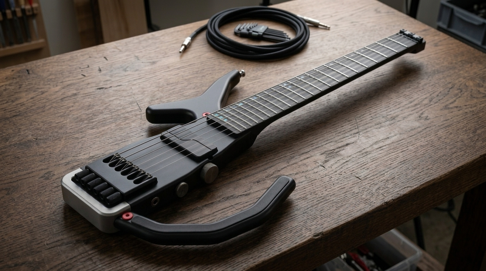
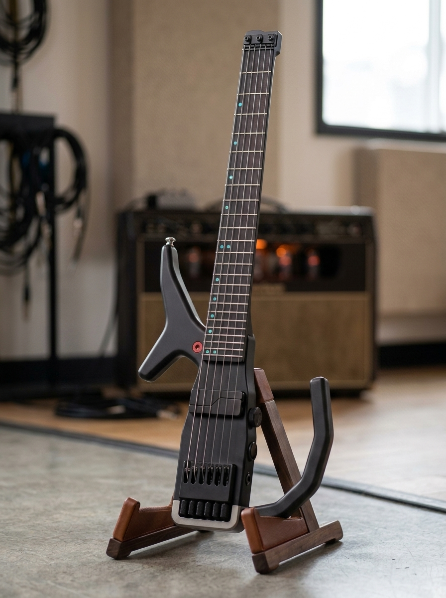
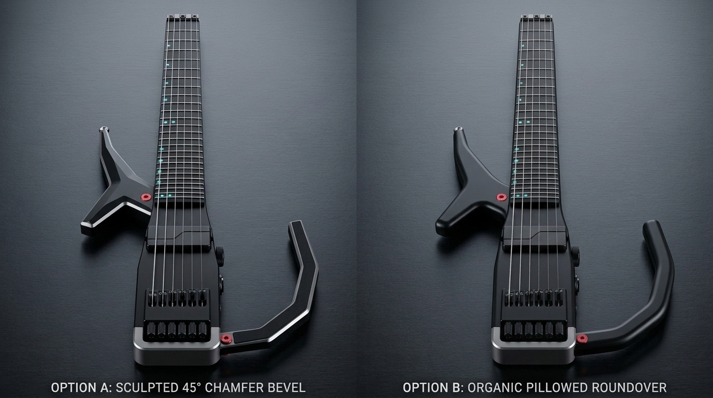
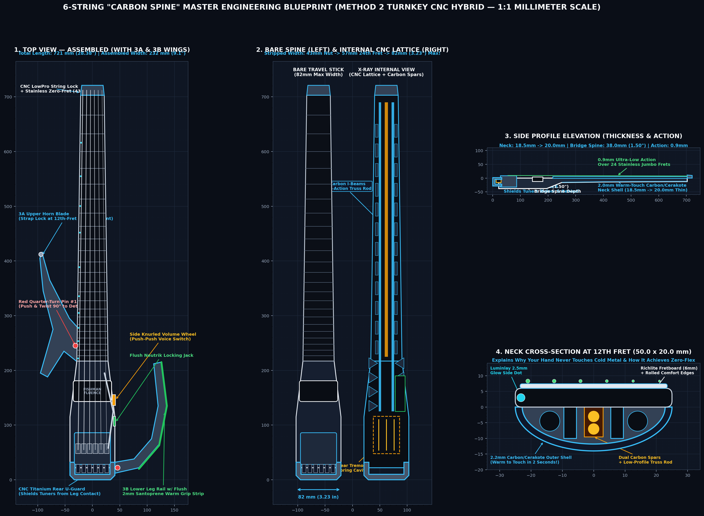
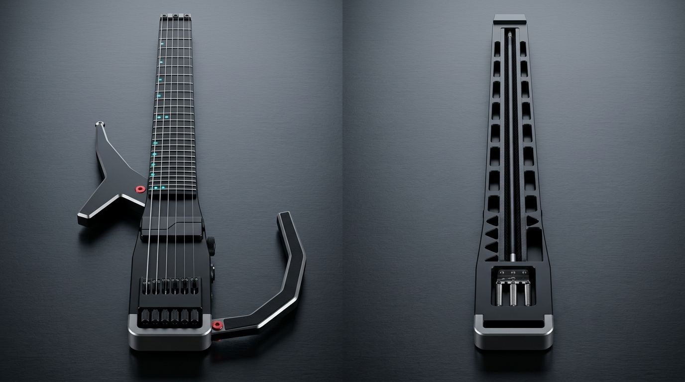
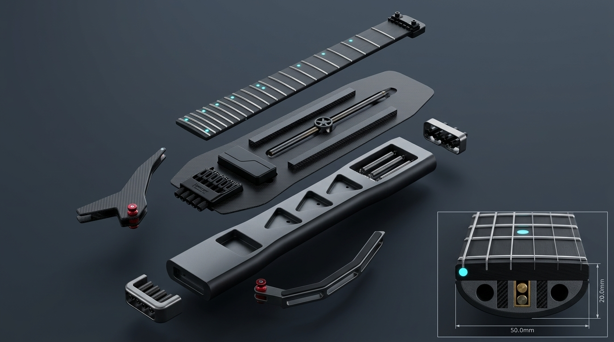
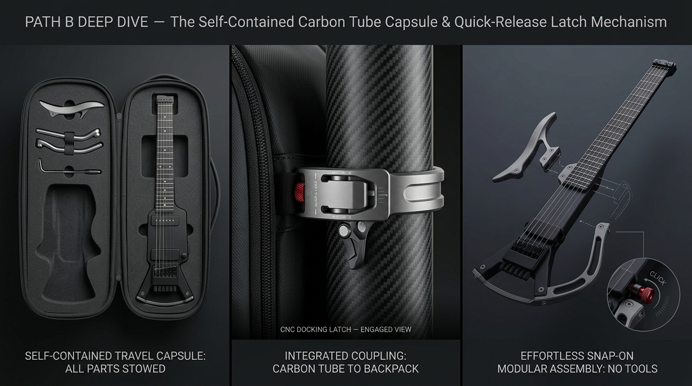
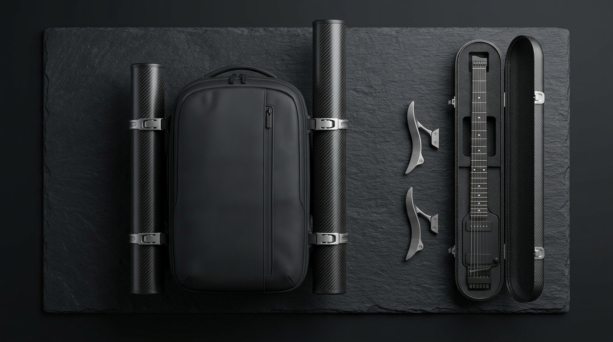
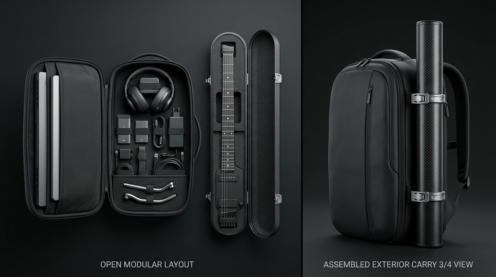
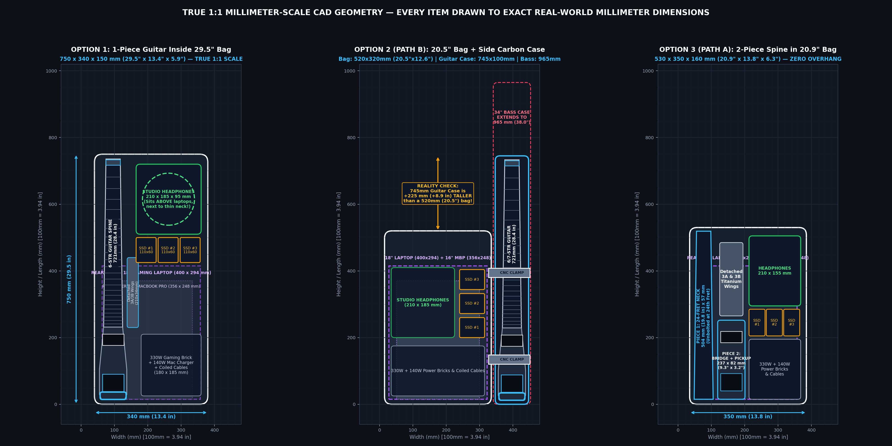
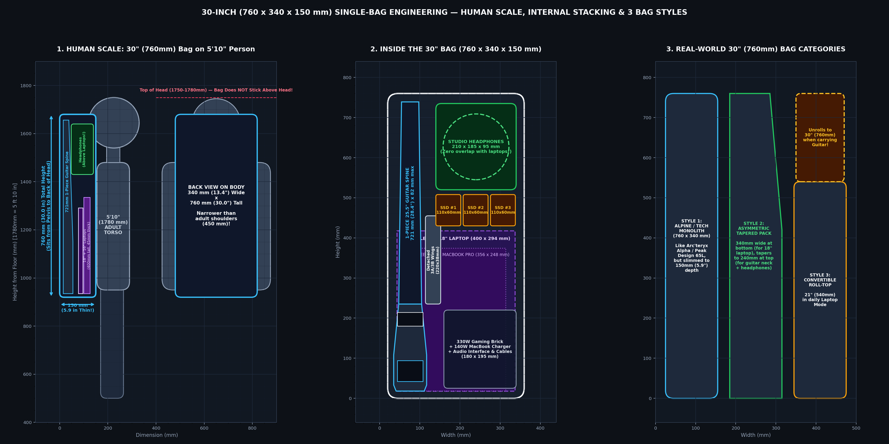
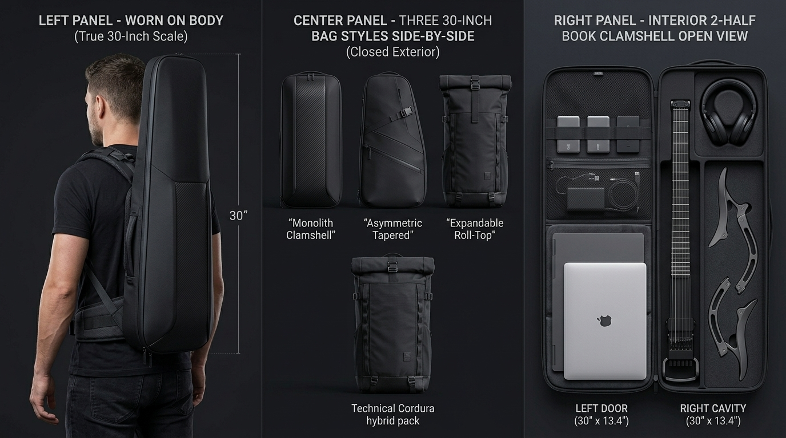
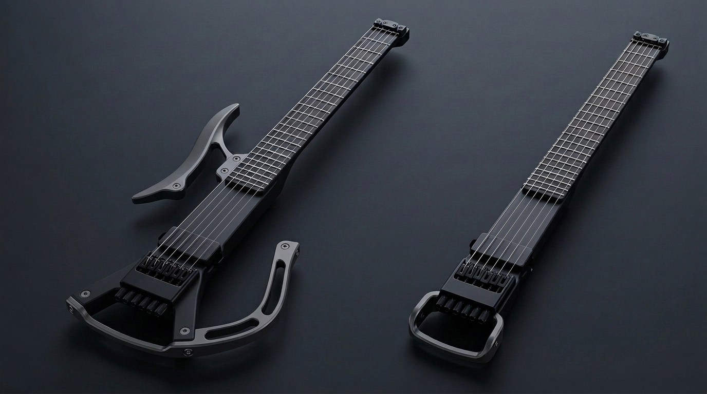
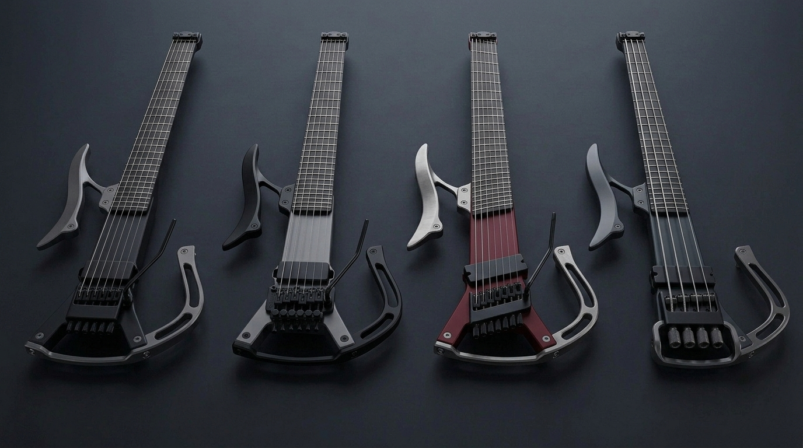
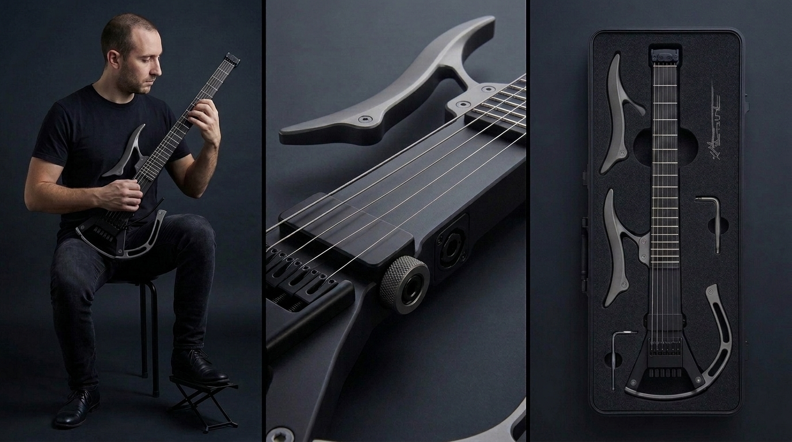
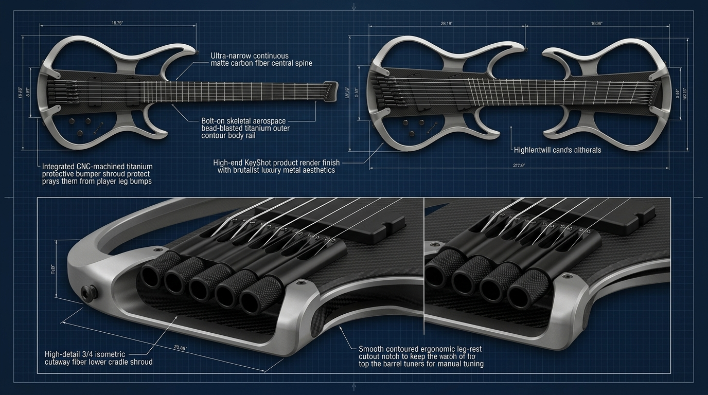
| Spec / Dimension | 6-String Guitar | 7-String Guitar | 8-String Guitar (MS) | 6-String Bass (MS) | 7-String Bass (MS) | 8-String Bass (MS) |
|---|---|---|---|---|---|---|
| Scale Length | 25.5" (648 mm) |
25.5" or 26.5" (673 mm) |
26.0"–27.5" (660–698 mm) |
33.0"–35.0" (838–889 mm) |
33.5"–35.5" (851–902 mm) |
34.0"–36.0" (864–914 mm) |
| Total 1-Piece Spine Length | 721 mm (28.38") | 721–746 mm (28.4"–29.4") | 777 mm (30.59") | 912 mm (35.9") | 925 mm (36.4") | 944 mm (37.17") |
| Width at Zero-Fret | 43.0 mm (1.69") | 48.0 mm (1.89") | 54.0 mm (2.13") | 52.0 mm (2.05") | 60.0 mm (2.36") | 68.0 mm (2.68") |
| Width at 24th Fret | 57.0 mm (2.24") | 64.0 mm (2.52") | 72.0 mm (2.83") | 76.0 mm (2.99") | 88.0 mm (3.46") | 100.0 mm (3.94") |
| Max Width at Titanium U-Guard | 82.0 mm (3.23") | 90.0 mm (3.54") | 100.0 mm (3.94") | 104.0 mm (4.09") | 116.0 mm (4.57") | 128.0 mm (5.04") |
| Bare Spine Weight | 1.05 kg (2.31 lbs) | 1.18 kg (2.60 lbs) | 1.32 kg (2.91 lbs) | 1.65 kg (3.64 lbs) | 1.85 kg (4.08 lbs) | 2.10 kg (4.63 lbs) |
| Weight w/ 3A+3B Titanium Wings | 1.38 kg (3.04 lbs) | 1.51 kg (3.33 lbs) | 1.65 kg (3.64 lbs) | 2.02 kg (4.45 lbs) | 2.22 kg (4.89 lbs) | 2.47 kg (5.45 lbs) |
| Subsystem / Component | 1-Off Prototype | Small Batch (50 Units) | OEM Production (250+ Units) |
|---|---|---|---|
| 1. Carbon Fiber Monocoque Spine + Richlite Board + Stainless Frets + Matte Finish | $420 | $245 | $165 |
| 2. Headless Floating Tremolo + String Lock (Hantug / Tan / Hipshot OEM) | $380 (Retail) | $210 (OEM Tier 1) | $135 (Custom CNC OEM) |
| 3. Pickup + Side Thumbwheel Volume + Neutrik Locking Jack (Fishman / Lundgren) | $165 | $105 | $78 |
| 4. CNC Titanium U-Guard + 3A/3B Wings + Captive Quarter-Turn Pins | $340 | $130 | $75 |
| 5. Final Assembly, PLEK Fret Leveling & Setup QC | $150 | $85 | $55 |
| SUBTOTAL — Guitar Only (6/7/8 Average) | $1,455 | $775 | $508 |
| 6. Self-Contained Carbon Tube Capsule (745 x 105 x 82 mm w/ CNC EVA Foam) | $310 | $140 | $88 |
| 7. 21" Dual-Laptop Backpack + 4x CNC Side-Latch Jaws | $290 | $125 | $79 |
| TOTAL LANDED COST (Complete Guitar + Carbon Capsule + Backpack System) | $2,055 | $1,040 | $675 |
| Category | Part / Subsystem | Supplier / Manufacturer | Direct Link |
|---|---|---|---|
| 1. Headless Guitar Tremolos & Bridges (6, 7 & 8-String) | Custom Headless Floating Tremolo & NGHB Fixed Bridges (6/7/8 & Multiscale, Titanium options) | Hantug Custom Guitars & Parts | https://www.hantug.com |
| TT6 / TT7 Ball-Bearing Headless Tremolos & TH1 Single Bridges | Tan Bridges | https://www.tanbridges.com | |
| 6, 7 & 8-String Split-Level Headless Guitar Tremolo & Fixed Systems | Hipshot Products | https://hipshotproducts.com/collections/guitar-headless | |
| Sophia 2:92 Pro Headless-Capable Floating Tremolo (60:1 Macro-Tuners) | Sophia Tremolos (CSL) | https://sophiatremolos.com | |
| 2300 / 7300 Top-Mount Cam Tremolos (6, 7, 8-String Guitar & 6-String Bass) | Kahler International | https://kahlerusa.com | |
| 2. Headless Bass Bridges (6, 7 & 8-String) | ABM 3901 Single-String Brass Monorail Headless Bass Tuners & Headpieces | ABM Guitar Parts (Germany) | https://abm-guitarpartsshop.com |
| 6, 7 & 8-String Headless Bass Bridge Systems | Hipshot Products | https://hipshotproducts.com/collections/bass-headless | |
| Modular Thrust-Bearing Headless Bass & Guitar Bridges | Nova Guitar Parts (via Ploutone) | https://ploutone.com/collections/nova-guitar-parts | |
| Submarine 3D Double-Locking Headless Bass & Multiscale Tuners | Mera Guitars | https://meraguitars.com | |
| 3. High-Gain Pickups (6, 7 & 8-String Guitar & Bass) | Fluence Modern / Stephen Carpenter / Tosin Abasi Multi-Voice Soapbars (6/7/8) | Fishman | https://www.fishman.com/fluence/ |
| M6 / M7 / M8 High-Gain Metal Humbuckers (Soapbar & Open-Coil) | Lundgren Guitar Pickups | https://lundgren.se | |
| Juggernaut / Ragnarok / Aftermath 6/7/8 Pickups (Burnt Titanium & Etched Covers) | Bare Knuckle Pickups | https://www.bareknucklepickups.co.uk | |
| Big Blademan / Big Rig 6, 7 & 8-String Soapbar Bass Pickups | Nordstrand Audio | https://nordstrandaudio.com/collections/6-string-bass-pickups | |
| 45DC / 50DCX Extended-Range Active Soapbars | EMG Pickups | https://www.emgpickups.com | |
| 4. Carbon Fiber, Core & Fretboard Materials | Carbon Fiber Neck D-Tubes, Pultruded I-Beams, Reinforcement Strips & Sheets | DragonPlate (Allred & Assoc.) | https://dragonplate.com |
| Toray Prepreg Carbon Fiber, Forged Carbon Tow, Epoxy & Tooling Board | Composite Envisions | https://compositeenvisions.com | |
| High-Modulus Carbon Tubes, Plates & Structural Foam Cores | Rock West Composites | https://www.rockwestcomposites.com | |
| Richlite Black Diamond Fretboard Blanks & Dual-Action Truss Rods | StewMac | https://www.stewmac.com | |
| 5. Frets & Side Markers | FW57110-S Stainless Steel Jumbo Fretwire (Frets 1–24 & Zero-Fret) | Jescar Enterprises | https://jescar.com/collections/fret-wire |
| Glow-in-the-Dark Side Dots (SGY Green / SB Cyan 2.5mm) | Luminlay | https://www.luminlay.com | |
| 6. Electronics & Locking Jack | NJ3FP6C-BAG Black Locking 1/4" Chassis Output Jack | Neutrik | https://www.neutrik.com/en/product/nj3fp6c-bag |
| Low-Friction 500k Push-Push / Push-Pull Potentiometers | Bourns (via Mouser) | https://www.mouser.com | |
| 7. CNC Titanium, Quick-Release Pins & Bag Hardware | Captive Quarter-Turn Pins, Ball-Lock Pins & Grade-5 Titanium Stock | McMaster-Carr | https://www.mcmaster.com/quick-release-pins/ |
| Aerospace Quarter-Turn & Detent Alignment Pins | Carr Lane Manufacturing | https://www.carrlane.com/product/quick-release-pins | |
| On-Demand 5-Axis CNC Machining (Titanium U-Guard, 3A/3B Wings, 7075 Side Clamps) | Xometry / Protolabs | https://www.xometry.com | |
| S-Locks Security Guitar Strap Locks | Schaller | https://schaller.info/en/s-locks/ | |
| Magnetic-Mechanical Quick-Release Backpack Hardware | Fidlock | https://www.fidlock.com |